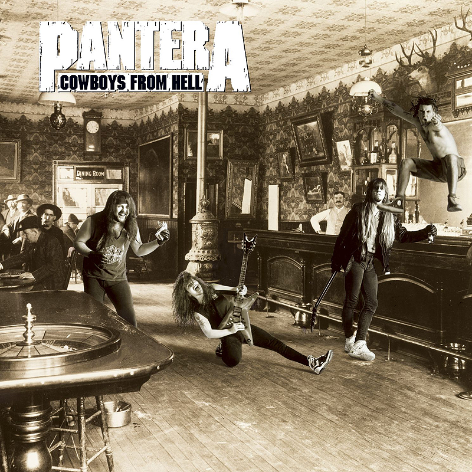

Cowboys from Hell

-Выпущен: 24.7
/90 -Лейбл: Elektra
-золотой сертификат: 14.9
/93 -платиновый сертификат: 16.7
/97 -Все песни написаны и аранжированы Pantera
-Все песни опубликованы Power Metal Music / Cota Music, BMI
-Администрируется Warner Tamerlane Music Publishing
-Продюсером и инженером является Терри Дейт
-сопродюсер Pantera
-Записано в Pantego Sound Studio, Пантего, Техас
-Сведение Pantera и Терри Датэ в The Carriage House, Стэмфорд, Коннектикут
-Помощник менеджера: Мэтт Лейн
-A & R: Марк Росс
-Мастеринг Хоуи Вайнберга в Masterdisk, Нью-Йорк
-Художественное руководство: Боб Дефрин
-Живые фотографии: Джо Гирон
-Фоновое фото на обложке: Архив Bettman
-Все тексты песен © 1990 Power Metal Music /Cota
Даррелл о ковбоях из ада (Guitar World 02/98):
“Я должен сказать, что это была чертовски невероятная вещь, которая с нами произошла. Мы наконец-то заключили контракт с [крупным лейблом]. Я знал, что мы нашли свой стиль, и я знал, что мы нашли свое направление и то, кем мы были. Это заняло у нас много времени, но я рад, что это не произошло раньше ”.
Рекс в “Ковбоях из ада" (Guitar World 7/24) "Винни складывал все барабаны, затем Дайм играл на гитаре. Мы бы включили бас в последнюю очередь. Мы отключили все барабанные каналы, и я просто играл вместе с треком Дайма. Это стало известно как “микроскоп”. Если что-то было не так, мы брали лезвие, разрезали и сращивали ленту. Тогда у нас не было профессиональных инструментов. И это то, что создало наш фирменный звук, в котором гитара и бас просто идеально сочетаются. Однажды Дайм пришел с этой записью, которую он проигрывал снова и снова в высоком регистре. Это сводило нас с ума, потому что он не переставал играть. Это то, что стало “Ковбоями из ада”, и это было началом мощного грува, которому сегодня следует каждая группа ”.